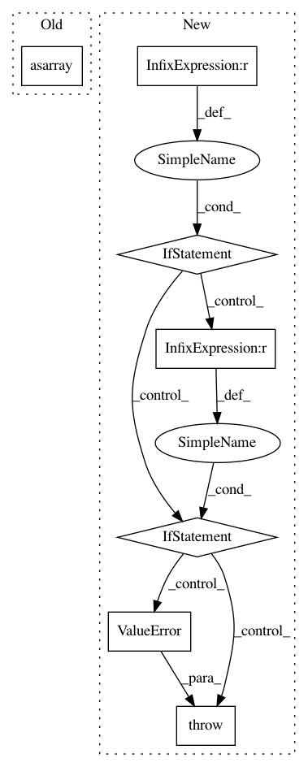

5781ad6adae3c4e4f264eab4de9050095eab6a6d,scipy/optimize/minpack.py,,curve_fit,#Any#Any#Any#Any#Any#Any#Any#Any#Any#Any#,489
Before Change
else:
xdata = np.asarray(xdata)
weights = 1.0 / asarray(sigma) if sigma is not None else None
func = _wrap_func(f, xdata, ydata, weights)
if callable(jac):
jac = _wrap_jac(jac, xdata, weights)
After Change
sigma = np.asarray(sigma)
// if 1-d, sigma are errors, define transform = 1/sigma
if sigma.shape == (ydata.size, ):
transform = 1.0 / sigma
// if 2-d, sigma is the covariance matrix,
// define transform = L such that L L^T = C
elif sigma.shape == (ydata.size, ydata.size):
try:
// scipy.linalg.cholesky requires lower=True to return L L^T = A
transform = cholesky(sigma, lower=True)
except LinAlgError:
raise ValueError("`sigma` must be positive definite.")
else:
raise ValueError("`sigma` has incorrect shape.")
else:
transform = None
func = _wrap_func(f, xdata, ydata, transform)
In pattern: SUPERPATTERN
Frequency: 3
Non-data size: 7
Instances
Project Name: scipy/scipy
Commit Name: 5781ad6adae3c4e4f264eab4de9050095eab6a6d
Time: 2016-08-27
Author: surhud.more@ipmu.jp
File Name: scipy/optimize/minpack.py
Class Name:
Method Name: curve_fit
Project Name: ilastik/ilastik
Commit Name: 15b116a944db990b88726ea9e1c712ba9bf33333
Time: 2017-11-07
Author: carstenhaubold@googlemail.com
File Name: ilastik/plugins_default/tracking_mamut_export.py
Class Name: TrackingMamutExportFormatPlugin
Method Name: export
Project Name: chainer/chainercv
Commit Name: b776ae08e9e676435c5cf8d1f31a86dfd3e1897f
Time: 2018-10-20
Author: yuyuniitani@gmail.com
File Name: chainercv/utils/image/read_image.py
Class Name:
Method Name: read_image